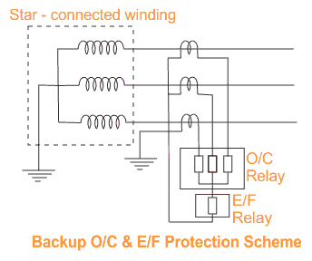
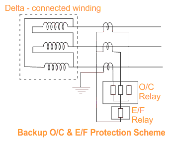
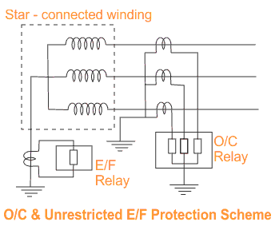

Over Current and Earth Fault Protection of Transformer
Backup protection of electrical transformer is simple Over Current and Earth Fault protection applied against external short circuit and excessive over loads. These over electric current and earth Fault relays may be of Inverse Definite Minimum Time (IDMT) or Definite Time type relays. Generally IDMT relays are connected to the in-feed side of the transformer.
The over electric current relays can not distinguish between external short circuit, over load and internal faults of the transformer. For any of the above fault, backup protection i.e. over electric current and earth fault protection connected to in-feed side of the transformer will operate. Backup protection is although generally installed at in feed side of the transformer, but it should trip both the primary and secondary circuit breakers of the transformer.

Over Current and Earth Fault protection relays may be also provided in load side of the transformer too, but it should not inter trip the primary side Circuit Breaker like the case of backup protection at in-feed side. The operation is governed primarily by electric current and time settings and the characteristic curve of the relay. To permit use of over load capacity of the transformer and co- ordination with other similar relays at about 125 to 150% of full load current of the transformer but below the minimum short circuit current.
Backup protection of transformer has four elements, three over electric current relays connected each in each phase and one earth fault relay connected to the common point of three over electric current relays as shown in the figure. The normal range of electric current settings available on IDMT over electric current relays is 50% to 200% and on earth fault relay 20 to 80%.

Another range of setting on earth fault relay is also available and may be selected where the earth fault electric current is restricted due to insertion of impedance in the neutral grounding. In the case of transformer winding with neutral earthed, unrestricted earth fault protection is obtained by connecting an ordinary earth fault relay across a neutral electric current transformer.
The unrestricted over electric current and earth fault relays should have proper time lag to co - ordinate with the protective relays of other circuit to avoid indiscriminate tripping.

 by
by